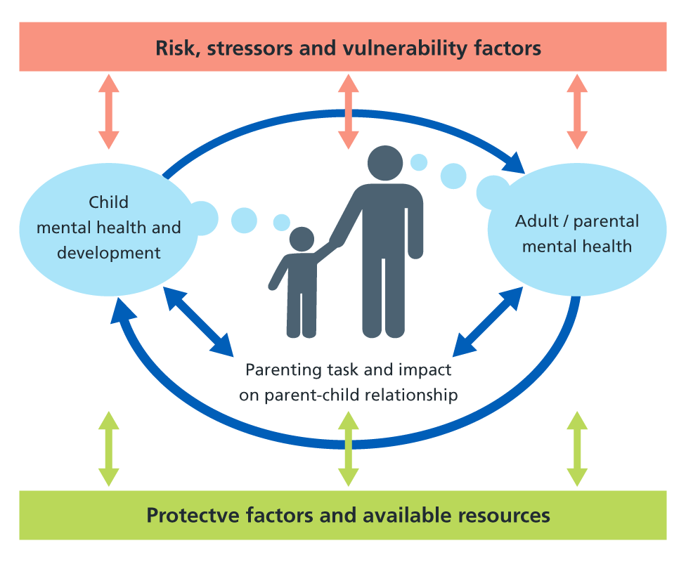

Since before the Munro Review in 2011, services and practitioners have had conversation about the fact that in families certain issues and hostilities occur and these events can adversely impact on the development and resilience of infants, children, teenagers and young people.
The Think Family agenda recognises and promotes the importance of a whole-family approach which is built on the principles of 'Reaching out – think family'.
No wrong door: all service should offer an open door into a system of joined-up support. This is based on more coordination between adult and children's services.
Looking at the whole family: services working with both adults and children take into account family circumstances and responsibilities. For example, an alcohol treatment service combines treatment with parenting classes while supervised childcare is provided for the children.
Providing support tailored to need: working with families to agree a package of support best suited to their particular situation.
Building on family strengths: practitioners work in partnerships with families recognising and promoting resilience and helping them to build their capabilities. For example, family group conferencing is used to empower a family to negotiate their own solution to a problem.
At this juncture we need to remind ourselves that according to legal definition, all citizens under 18 are referred to as children, despite many of us calling citizens teenagers and young people.
The family focus alone may not be enough to address the problems faced by some parents with a mental health problem nor will it necessarily prevent a child (or teenager or young person) from suffering harm. Services need to understand the adults' problems so these can be addressed through specific clinical expertise and services, just as children's problems need to be, or those requiring a whole family approach.
Adopting a family focus does not negate the need to providing individual care, but must be considered alongside it. This means thinking about the child, the parent and the family, with adult and children's health and social care services working together to consider the needs of the individual in the context of their relationships and their environment.
The Crossing Bridges Family Model (Falkov 1998) is a useful conceptual framework that can help staff to consider the parent, the child and the family as a whole when assessing the needs of and planning care packages for families with a parent suffering from a mental health problem. The model illustrates how the mental health and wellbeing of the children and adults in a family where a parent is mentally ill are intimately linked in at least three ways (see figure below):
The Model also identifies that there are risks, stressors and vulnerability factors increasing the likelihood of a poor outcome, as well as strengths, resources and protective factors that enable families to overcome adversity.
The Family Model Risks, stressors and vulnerability factors
Download PDF
Individual risk or stress factors, on their own, do not necessarily have a serious effect on an adult's parenting capacity or their children's mental health. However, some parents with mental health problems will face multiple adversities. Risk factors are also cumulative – the presence of more than one increases the likelihood that the problems experienced and impact on the child and parent will be more serious.
The factors which can promote resilience in children – i.e. the factors which determine how well a child copes with their parent's mental health problem – are related to:
For children, all protective strategies operate through one or more of the following processes:
An approach based on the Family Model enables staff to:
Adopting this approach requires a change in attitude and practice which includes: